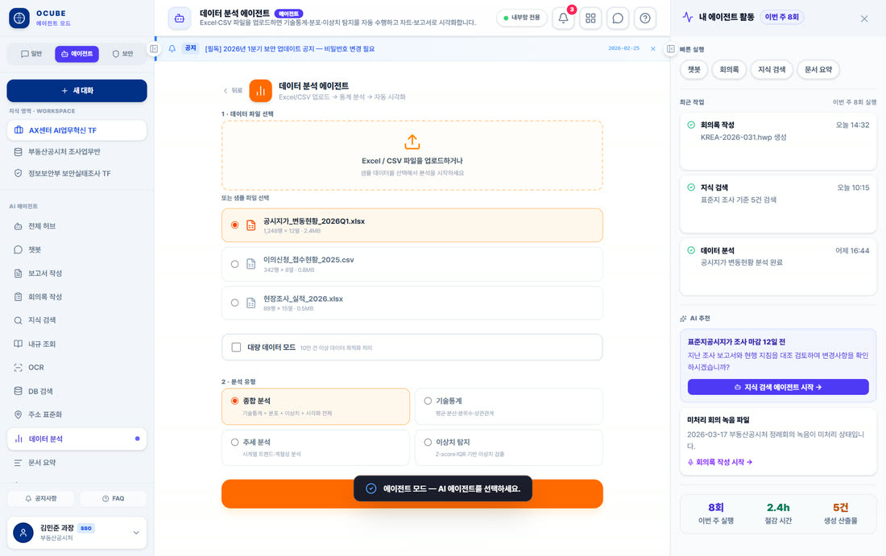
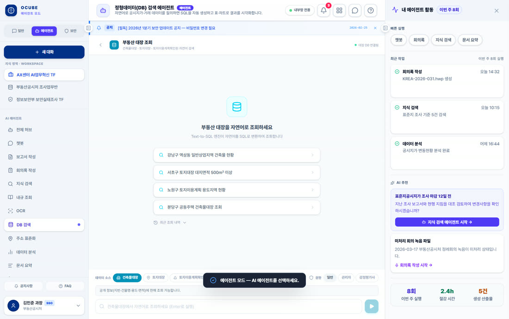
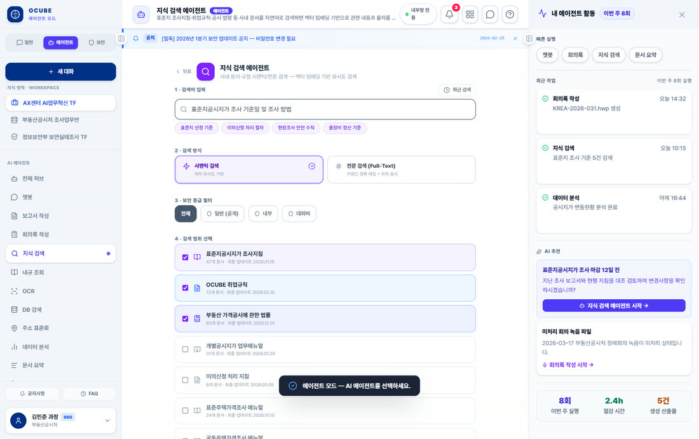
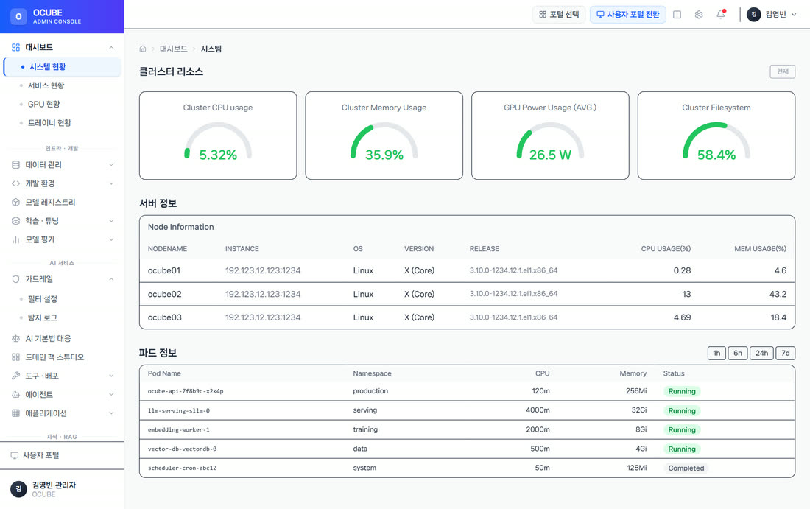
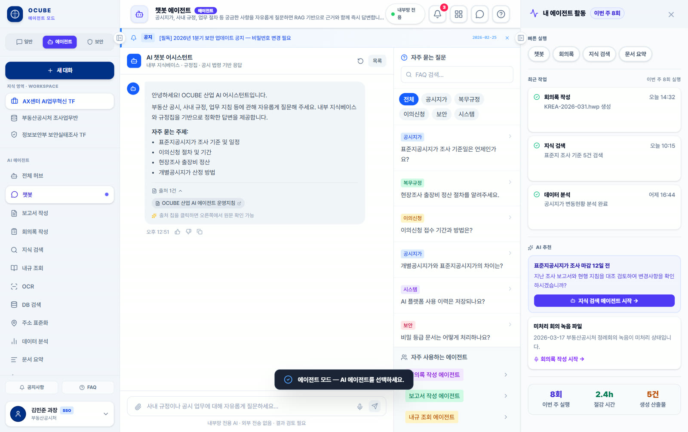

자재 조회 AI 에이전트
과제 재고·
해결 자연어→SQL 변환 + 지식검색(RAG), 차트·
성과 분산 데이터 조회·
흩어진 시스템과 문서를 하나의 대화로 연결합니다.근거를 확인하고 필요한 업무는 사람의 승인 후 실행합니다.
QAgent는 업무 시스템과 사내 문서를 자연어로 조회·
답변을 리포트로 정리하고, 필요한 작업은 담당자 승인 후 실행합니다.

데이터를 찾아 답하고, 확인 가능한 근거를 제시하며, 실행 전에는 담당자의 통제를 거칩니다.
자연어 질문을 SQL로 변환해 여러 시스템에 흩어진 데이터를 한 번에 조회합니다.
SQL을 몰라도 필요한 데이터를 직접 찾을 수 있습니다.

NL2SQL 조회 — 프로토타입 예시 화면
사내 문서와 지식을 검색해 답하고, 답변마다 출처를 함께 인용합니다.
어디서 온 답인지 확인돼야 업무에 씁니다.

GraphRAG 지식 검색 — 프로토타입 예시 화면
민감한 작업은 안전정책 정책과 사람의 승인을 거쳐 실행합니다.
에이전트에게 일을 맡기되, 통제권은 사람에게 남깁니다.

안전정책 관리 — 프로토타입 예시 화면
사내 자료를 먼저 찾고, 답변에 근거를 붙여 검증합니다.
자연어 질문을 데이터 조회문으로 변환(NL2SQL)
문서를 의미 기반으로 검색하고 관련도가 높은 순서로 재정렬
근거 검색(RAG·
상용 대규모 언어모델(LLM) API 또는 온프레미스 소형 언어모델(sLLM)으로 분석·
검색한 자료와 답변이 일치하는지 확인하고 개인정보를 가려 안전성을 점검
담당자 검토·
근거를 붙이는 세 가지 방식 질문의 성격에 따라 검색·
질문마다 사내 문서·
범위가 정해진 지식은 미리 컨텍스트에 적재해 검색 단계 없이 응답 — 반복 질의 지연 감소, 온프레미스 sLLM도 동일
자연어 질문을 질의문으로 바꿔 데이터베이스에서 직접 집계·
과제 재고·
해결 자연어→SQL 변환 + 지식검색(RAG), 차트·
성과 분산 데이터 조회·
영역 CS 자동응답, 사내 문서 Q&A, 리포트 초안 자동화
효과 반복 조회·

복잡한 현장 조건에서 에이전트가 실제로 일하게 만드는 방식을 시나리오로 정리했습니다.
재고·
부서별로 나뉜 작업표준서·
안전·
부서·
사내 데이터를 외부로 보낼 수 없는 조직 — 사내 서버 소형 언어모델(sLLM)로 온프레미스 운영, 검색·
범위가 정해진 지식은 캐시 증강 생성(CAG)으로 검색 단계 생략, 수치·